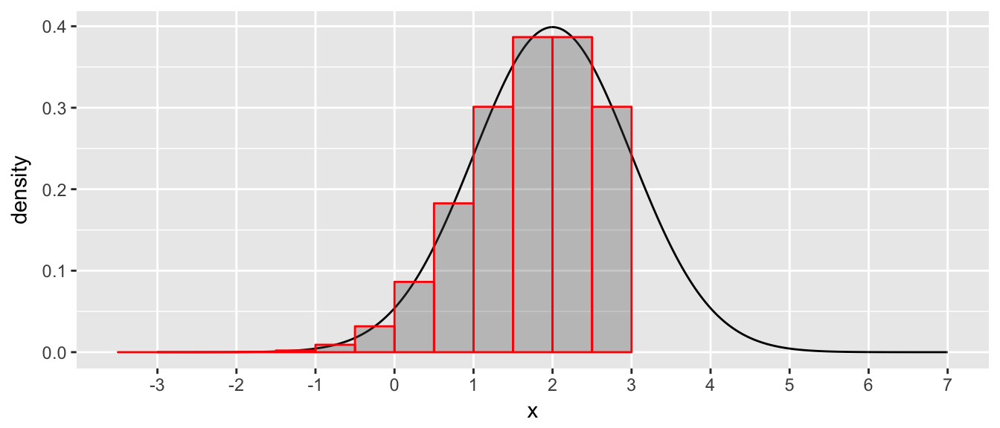

Chapter 3 Random Variables and Distributions
3.1 Defining Random Variables and Discrete Distributions
A random variable is a function that takes outcomes in the sample space \(\mathcal{S}\) and maps them to numeric values in \(\mathbb{R}\). Often times we abbreviate random variable as RV.
The idea is that random events such as flipping Heads, a medical test showing the patient has a disease, Chris Froome winning the Tour de France, or rolling a Leaning Jowler in Pass the Pigs are all random events but to do math on them, we need to turn them into numbers.
In cases where the sample space \(\mathcal{S}\) is already numeric, the random variable can just be the identity, but in other cases, we might have to be more careful. For example, if my experiment is flipping a fair coin \(n=4\) times, I could define the random variable \(X=\) number of heads and \(X\) could take on any of the values \(x \in \{0,1,2,3,4\}\). I could similarly define
\[Y= \begin{cases} 0 \;\;\; \textrm{ if number of heads } < 2 \\ 1 \;\;\; \textrm{ if number of heads } > 2 \end{cases}\]
A RV function doesn’t have to be one-to-one and it doesn’t have to map to the entire set of real values.
Because events in the sample space \(\mathcal{S}\) have an associated probability, then it is natural to define an event, say \(B\) to be all the outcomes \(s \in \mathcal{S}\) such that \(X(s) = x\) and then define \(Pr(X=x) = Pr(B)\).
Notation: We will refer to the random variable using the capital letters, (e.g. \(X\), \(Y\), \(Z\), \(W\)) and the possible values they take on using lower case letters. With this notation, the RV \(X\) could take on values \(x \in \{0,1,2,3,4\}\)
- We consider flipping a fair coin \(n=4\) times.
- What is the set of outcomes? As usual, we will define an event for each outcome.
- What is the probability of each outcome?
- For the RV \(X\) defined above, what outcomes define the event \(B\) such that \(s \in B \implies X(s)=2\)?
- What is \(Pr(B)\)? Therefore what is \(Pr(X=2)\)?
- For the RV \(Y\) defined above, what outcomes define the event \(A\) such that \(s \in A \implies Y(s)=1\)?
- What is \(Pr(A)\)? Therefore what is \(Pr(Y=1)\)?
For each value that \(X\) or \(Y\) could take on, we could figure out the probability of the associated event. We define the random variables distribution as a description of what values the RV can take on and \(Pr(X \in C)\), for any interval \(C = \{c: a\le c \le b\}\) for any \(a<b\). This is actually a very awkward definition and we will examine more convenient ways to specify these same probabilities.
Discrete random variables are RVs that can only take on a finite or countably infinite set of values.
Continuous random variables are RVs that can take on an unaccountably infinite set of values.
We now define the probability function of a discrete RV \(X\) as \[f(x) = Pr(X = x)\] and the closure of the set \(\{x: \textrm{ such that } f(x) > 0\}\) is referred to as the support of \(X\). Notice that this function is defined for all \(x\in \mathbb{R}\), but for only a countable number of cases is \(f(x)>0\).
Suppose that RV \(X\) can take on the values \(\{x_1,x_2,\dots,x_K\}\). Prove that \[\sum_{k=1}^K f(x_k) = 1\]
Bernoulli Distribution. Suppose that the random variable \(W\) takes on the values \(0\) and \(1\) with the probabilities \(Pr(W=1) = p\) and \(Pr(W=0) = 1-p\). Then we say that \(W\) has a Bernoulli distribution with probability of success \(p\), which I might write as \(W \sim Bernoulli(p)\). Show that for any interval \(C =\{c: a\le c \le b\}\) in \(\mathbb{R}\), you can find \(Pr(W \in C)\).
Uniform Distribution on Integers. Suppose that we have integers \(a\) and \(b\) such that \(a < b\). Suppose that the RV \(X\) is equally likely to be any of the consecutive integers \(a,\dots,b\). What is \(f(x)\)? (Make sure your definition applies to any \(x\in\mathbb{R}\))
- Binomial Distribution Suppose that we have an experiment that consists of \(n\) independent Bernoulli(\(p\)) trials. We are interested in the distribution of \(X=\) # of successful trials. That is \(X\sim Binomial(n,p)\).
- For any integer \(x \in \{0,1,\dots,n\}\), what is \(Pr(X=x)\)?
- Define \(f(x)\) for all values of \(x \in \mathbb{R}\).
Give two examples of random variables which have Bernoulli(\(p=1/2\)) distributions. These two RVs should not the same RVs, but they have the same distribution. That is to say, RVs have distributions, but distributions are not RVs.
Suppose that two fair six-sided dice are rolled and the RV of interest is the absolute value of the difference between the dice. Give the probability distribution along with an illuminating graph.
Suppose that a box contains 7 red balls and 3 green balls. If five balls are selected at random, without replacement, determine the probability function of \(X\) where \(X\) is the number of red balls selected.
Suppose that a random variable \(X\) has a discrete distribution with the following probability function: \[f(x) = \begin{cases} \frac{c}{2^x} \;\textrm{ for } x = 0, 1, 2, \dots \\ 0 \;\;\;\; \textrm{otherwise} \end{cases}\] Find the value for \(c\) that forces the requirement that \[\sum_{x=0}^\infty f(x) = 1\] Hint: This is a particular power series. Go to any Calculus book (or internet) for an appropriate result. Make sure you introduce the result and show why the result applies to \(f(x)\) in your solution.
For the binomial distribution (and many distributions we will consider this semester), it would be nice to not have to calculate various probabilities by hand. Most mathematical software packages include some way to calculate these probabilities.
| System | Documentation Link or site link |
|---|---|
| Matlab | https://www.mathworks.com/help/stats/working-with-probability-distributions.html |
| Mathematica | http://reference.wolfram.com/language/howto/WorkWithStatisticalDistributions.html |
| R | https://dereksonderegger.github.io/570L/3-statistical-tables.html |
| Web App | https://ismay.shinyapps.io/ProbApp/ |
- Each time I ride home or to work, there is a \(p=0.1\) probability that I will get stopped by a train. Let \(X\) be the number of times I’m stopped by the train in the next 10 trips. Assume that the probability I’m stopped on trip \(i\) is independent of all other trips \(j\).
- What is the distribution of \(X\)? Remember, to specify the distribution by name, you must specify the name and the value of all parameters.
- What is \(Pr(X =6)\)?
- What is \(Pr(X < 6)\)?
- What is \(Pr(X \ge 6)\)?
3.2 Continuous Distributions
We wish to define something similar to the probability function for continuous RVs. However, because there are an uncountable number of values that the RV could take on, we have to be careful and define probability on intervals of the form \([a,b]\). We define the probability density function (usually denoted pdf) as the function \(f(x)\) such that \[Pr( a \le X \le b) = \int_a^b f(x) dx\]
We further define the support of the distribution as the closure of the set \({x: f(x)>0}\). This is the second time we’ve defined the support as the closure of the set. In the discrete case, it didn’t really matter, but here it does. If we define the pdf on the set \([0,1]\) versus \((0,1)\), we want the support to contain the end points of the interval, that is the support is the closure of \((0,1)\) which is \([0,1]\).
Show that, for any \(a\in\mathbb{R}\), \(Pr( X = a ) = 0\) is consistent with this definition of \(f(x)\). Hint: What happens as \(b-a\) gets small? Take the limit.
Prove that \(\int_{-\infty}^\infty f(x) dx = 1\).
Further notice that \(f(x)\ge0\) for all \(x\) because otherwise that would imply that there are events with negative probabilities.
- Continuous Uniform. Suppose that the random variable \(X\) will be a randomly chosen real value from the interval \([a,b]\). Suppose that for any sub interval \(d=[d_1,d_2]\) where \(a \le d_1 \le d_2 \le b\), that \(Pr( X \in d)\) is proportional to the length of the interval \(d\). What is the pdf of the distribution of \(X\)?
It is unfortunate that your book doesn’t introduce indicator functions at this point in time. We can define the following: \[I( \textrm{logical test} ) = \begin{cases} 1 \;\;\; \textrm{ if logical test is true } \\ 0 \;\;\; \textrm{ if logical test is false } \end{cases}\]
- Suppose that the pdf of a random variable \(X\) is \[f(x) = \frac{4}{3}\left(1-x^3\right) \;I(0<x<1)\]
- Create a graph of the pdf.
- Find \(Pr\left( X\le \frac{1}{2} \right)\)?
- Find \(Pr\left( \frac{1}{4} < X < \frac{3}{4} \right)\)
- Find \(Pr\left( X > \frac{3}{4} \right)\)
- Suppose the random variable \(X\) has pdf \[f(x) = c\cdot e^{-5x}I(x\ge 0) = \begin{cases} c\cdot e^{-5 x} \;\;\; \textrm{ if } x \ge 0 \\
0 \;\;\;\;\;\;\;\;\;\;\;\;\; \textrm{otherwise}
\end{cases}\]
- What is the value of \(c\) that makes this a valid pdf? That is, what value of \(c\) makes this function integrate to 1?
- Graph this function. What is \(f(0)\)? Many students dislike that \(f(0)>1\) is greater than one. Why isn’t this a problem?
- What is the probability \(Pr(X \le 0.5)\)?
- Suppose that the pdf of the random variable \(X\) is \[f(x)= c \cdot x \;\;I(0\le x \le 3)\]
- What value of \(c\) makes this a valid pdf?
- Find a value of \(t\) such that \(Pr( X \le t ) = 0.25)\)
- Find a value of \(t\) such that \(Pr( X > t) = 0.5)\)
- Given the same random variable \(X\) described in problem 3.2.5, consider the random variable \(Y\) which is the simply the nearest integer to \(X\). What is the pf of \(Y\)?
We now have defined both the probability function (pf) for discrete random variables and probability density function (pdf) for continuous random variables. We now try to make a physics analogy to describe the difference between the two. In both cases we want to think about probability as physical mass.
Discrete Case In this case, all the probability mass is concentrated at precise points. So we have little nuggets of probability mass, at discrete points. If I want to know, say \(Pr(X \le 3)\) then we have to sum the probability across all the discrete locations such that \(X \le 3\).
Continuous Case In this case, the probability mass is spread out across \(\mathbb{R}\) and the concentration of mass is not uniform, some spots have more concentrated mass. In this case, we don’t have a definite amount of mass at a particular point, but we do have a description of how dense the mass is at any point. In this case if we want to know \(Pr(X \le 3)\) then we have to break up \(\mathbb{R}\) into a bunch of intervals and then combine the length of the interval along with information about the average density of each interval.

Each bar has some probability mass (mass is the length of the interval times the average density along the interval) and then we just sum up the bars. If we take the limit as we make the bars narrower, then we end up with \[Pr(X \le 3) = \int_{-\infty}^3 f(x) \, dx\]
You might be a little freaked out because typically you would think about mass being the area or volume times the density, but we need to start in the 1-dimension case before we address the 2-dimension and 3-dimension cases.
3.3 Cumulative Distribution Function
It is somewhat annoying to mathematically describe distributions in two different ways, depending on if the random variable is discrete or continuous.
\[\begin{aligned} Pr \left( X=x \right) = f(x) \;\;\; & \textrm{ if X is discrete RV } \\ Pr \left(a \le X \le b\right) = \int_a^b f(x)\,dx \;\;\; & \textrm{ if X is continuous RV } \end{aligned}\]
While the probability function and probability density function are both useful functions, it is mathematically convenient to have a mathematical description of the distribution that has the same interpretation regardless of if the distribution is discrete or continuous.
Definition: For a random variable \(X\) (notice we don’t specify if it is continuous or discrete) the Cumulative Distribution Function (CDF) is defined as \[F(x) = Pr( X \le x )\] Notice that this is defined for all \(x\) in \(\mathbb{R}\).
- Suppose that random variable \(X\) has a Uniform distribution on the integers \(1,2,3,4,5\). These are the only values that \(X\) can take on, and \[f(x) = \frac{1}{5} \, \cdot I\Big(x \in \{1,2,\dots,5\}\Big)\] Draw a graph of \(F(x)\) and make sure the graph demonstrates:
- That \(F(x)\) is defined for all \(x \in \mathbb{R}\).
- That \(F(x)\) is a step function.
- That \(F(x)\) is continuous from the right. That is, for \(\epsilon > 0\), \(\lim_{\epsilon \to 0} F(x+\epsilon) = F(x)\).
- That \(\lim_{x\to -\infty} F(x) = 0\).
- That \(\lim_{x\to \infty} F(x) = 1\).
Define \(B_x = \left\{s \textrm{ such that } X(s) \le x\right\}\). Then we have for \(x_1 < x_2\) that \(B_{x_1} \subset B_{x_2}\) and therefore: \[\lim_{x\to -\infty} F(x) = \lim_{x\to -\infty} Pr\left( B_{x} \right) = Pr( \emptyset ) = 0\] \[\lim_{x\to \infty} F(x) = \lim_{x\to \infty} Pr\left( B_{x} \right) = Pr( \mathcal{S} ) = 1\]
Show that \(F(x)\) must be non-decreasing. Notice this allows for \(F(x)\) to be a flat function, but cannot decrease.
Suppose that the r.v. \(X\) has a Binomial(\(n=5\), \(p=0.8\)) distribution. Sketch the CDF.
- Geometric Distribution Suppose that we flip a biased coin that has probability of heads as \(p \in [0,1]\). Let the r.v. \(X\) be the number of coin flips until the first head is observed.
- What values could \(X\) take? Mathematically, we say, what is the support of \(X\)?
- Is \(X\) a continuous or discrete random variable?
- Find the probability function, \(f(x)\).
- Show that cumulative distribution function is \(F(x) = 1 - (1-p)^x\). Hint: Geometric Series!
For continuous random variables it is relatively easy to go back and forth from the cdf to the pdf (assuming the integration and differentiation isn’t too hard). \[ F(x) = \int_\infty ^x f(u) \, du\] \[ f(x) = \frac{d}{dx}\, F(x)\]
- Exponential Distribution (Warning! There are two ways to parameterize the Exponential Distribution. Before you look anything up, make sure it is using the same parameterization you are.) Suppose that we have a continuous random variable \(X\) with pdf \[f(x) = \beta e ^{-\beta x} \;\cdot I(x > 0)\]
- Find the cdf function \(F(x)\).
- For \(\beta=2\) sketch the pdf and cdf.
- On the pdf and cdf graphs, represent \(Pr(X < 1)\). In the pdf it will be some shaded area, in the cdf it is something else.
- Suppose that the cdf of a random variable \(X\) is as follows: \[ F(x) = \begin{cases}
0 \;\;\; & \textrm{ for } x \le 0 \\
\frac{1}{9} x^2 & \textrm{ for } 0 \le x \le 3 \\
1 & \textrm{ for } x > 3
\end{cases}\]
- Find the pdf function \(f(x)\).
- Sketch the pdf and cdf.
- On the pdf and cdf graphs, represent \(Pr( X \le 2 )\).
- Suppose that a point in the \(xy\)-plane is chosen at random from the interior of the unit circle, which is the circle centered at \((0,0)\) with radius 1. Notice the probability that the chosen point belongs to a given region is proportional to the area of the region. Let the random variable \(Z\) represent the distance of the point to the origin.
- Find and sketch the cdf of \(Z\).
- Find and sketch the pdf of \(Z\).
- On the pdf and cdf graphs, represent \(Pr( Z \le 0.5 )\).
We think of the cdf as a function that takes some value \(x\) and produces a probability. In the case where \(F(x)\) is monotonically increasing, we could define \(F^{-1}(p)\) which takes a probability and tells us what value of \(x\) produces \(F(x)=p\).
The quantile function of a distribution generalizes the inverse function to work similarly for non-decreasing functions by defining \[F^{-1}(p) = \min(x) \textrm{ such that } F(x) \ge p\]
- Suppose that a point in the \(xy\)-plane is chosen at random from the interior of the unit circle, which is the circle centered at \(\{0,0\}\) with radius 1. Notice the probability that the chosen point belongs to a given region is proportional to the area of the region. Let the random variable \(Z\) represent the distance of the point to the origin.
- What is the median of the distribution? That is, find the value \(z\) such that \(Pr(Z \le z)=0.5\).
- Again sketch the pdf and cdf of this distribution and represent the median on both graphs along with pertinent information showing that indeed the value you found is the median.
- What is the \(75\)th percentile? Follow your previous steps in part (a) and (b).
- Binomial Distribution Again we consider the binomial distribution but now with parameters \(n=6\) and probability of success \(p=0.4\).
- Find and graph the pdf and cdf of this distribution.
- What is the median of this distribution?
- What is the \(75\)th percentile? What is the \(80\)th percentile?
3.4 Bivariate Distributions
We now consider the case of having two random variables. We can think of selecting an individual from a population and measuring two (or more!) variables. For example, we might select a NAU student and measure both their height and weight and we want to understand how those two measurements vary. It should be clear that there is a positive correlation (taller people also tend to weigh more) and we want to establish the mathematical framework to address questions such as this.
In general we will consider the distribution of 2 or more random variables and we will call this the joint distribution. In the bivariate case, we will consider the joint distribution of \(X\) and \(Y\).
3.4.1 Bivariate Discrete
We first consider the case where both variables are discrete. In this case, the bivariate distribution can be defined by simply defining the probabilities \(f(x,y)=Pr(X=x, Y=y)\). Your book likes to emphasize the notation of an \((X,Y)\) pair and writes these as \(Pr\Big( (X,Y) = (x,y)\Big)\), but I dislike so many parentheses.
- Consider the experiment of rolling two six-sided fair dice. Define the discrete random variable \(X\) as the number of ones we roll and \(Y\) as the number of sixes.
Fill in the table of \(f(x,y)\) values.
\(f(x,y)\) \(Y=0\) \(Y=1\) \(Y=2\) \(X=0\) \(X=1\) \(X=2\) Find \(Pr( X\ge 1 \textrm{ and } Y \ge 1 )\)
- Suppose that \(X\) and \(Y\) have a discrete joint distribution for which the joint p.f. is defined as follows: \[f(x,y) = \begin{cases}
c|x+y| & \textrm{ for } x \in \{-2, -1, 0, 1, 2 \} \\
& \textrm{ and } y \in \{-2, -1, 0, 1, 2 \} \\
0 & \textrm{ otherwise. }
\end{cases}\]
- Find the value of the constant \(c\).
- Find \(Pr(X = 0 \textrm{ and } Y = -2)\).
- Find \(Pr(X=1)\)
- Find \(Pr(|X−Y| \le 1)\)
3.4.2 Bivariate Continuous
Two random variables \(X\) and \(Y\) have a bivariate continuous distribution if there exists a non-negative function \(f(x,y)\) such that for every subset \(C\) of the \(xy\)-plane \[Pr\Big[ (X,Y)\in C\Big] = \iint_C f(x,y)\]
Unsurprisingly, the requirements for a function \(f(x,y)\) to be a joint pdf are: \[f(x,y) \ge 0 \textrm{ for all } (x,y) \textrm{ in } \mathbb{R}^2\] \[\int_{-\infty}^{\infty} \int_{-\infty}^{\infty} f(x,y) \, dx\,dy = 1\]
Consider the case where we have the joint pdf \[f(x,y) = 3x \, \cdot I(0\le y \le x \le 1)\] We could visualize this in 3-D but I find it easier to visualize the \(xy\)-plane and then let the height of the density function be represented by color.

We might now ask question such as “What is the probability that \(X \le 0.5\)?” or “What is the probability that \(Y>X^2\)? In both cases, we just need to integrate the density across the full area of interest.
\[\begin{aligned} Pr( X \le 0.5 ) &= \int_0^{0.5} \int_0^x f(x,y) \,dy\,dx \\ &= \int_0^{0.5} \int_0^x 3x \,dy\,dx \\ &= \int_0^{0.5} 3xy \rvert_{y=0}^x \,dx \\ &= \int_0^{0.5} 3x^2 \,dx \\ &= x^3 \rvert_{x=0}^{0.5} \\ &= 0.5^3 \\ &= \frac{1}{8} \end{aligned}\]
Notice that you could ask Wolfram Alpha for this by using the following:
Integrate[ Integrate[ 3*x, {y,0,x}], {x,0,0.5} ] ]Similarly we could ask \[\begin{aligned} Pr( Y > X^2 ) &= \int_0^{1} \int_{x^2}^x f(x,y) \,dy\,dx \\ &= \int_0^{1} \int_{x^2}^x 3x \,dy\,dx \\ &= \int_0^{1} 3xy \rvert_{y=x^2}^x \,dx \\ &= \int_0^{1} 3x^2 - 3x^3 \,dx \\ &= x^3 - \frac{3}{4}x^4 \rvert_{x=0}^{1} \\ &= \frac{1}{4} \end{aligned}\]
and verify this via Wolfram…
Integrate[ Integrate[ 3*x, {y,x^2,x}], {x,0,1} ] ]The joint CDF of the bivariate distribution is defined as we would expect it: \[F(x,y) = Pr( X\le x, \textrm{ and } Y\le y)\]
Just as in the univariate case, \(F(x,y)\) is non-decreasing \(x\) for every fixed value of \(y\) and as well as non-decreasing in \(y\) for every fixed value of \(x\).
Claims: Suppose that \(X\) and \(Y\) have joint cdf \(F(x,y)\). Define the cdf of \(X\) as \(F_1(x)\) and the cdf of \(Y\) as \(F_2(y)\). Then \[F_1(x) = \lim_{y\to\infty} F(x,y)\] \[F_2(y) = \lim_{x\to\infty} F(x,y)\] \[F(x,y) = \int_{-\infty}^x \int_{-\infty}^y f(u,v) \, dv\,du\] \[f(x,y) = \frac{\partial^2 F(x,y)}{\partial x \partial y} = \frac{\partial^2 F(x,y)}{\partial y \partial x}\] assuming the integrals and derivatives exist.
- Suppose the random variables \(X\) and \(Y\) have joint pdf \[f(x,y) = c x^2 y \,\cdot I(x^2 \le y \le 1)\]
- Draw the support of this distribution by drawing the parabola \(y=x^2\) on the \(xy\)-plane and shade in the area for which \(f(x,y)>0\). Denote this region as \(D\)
- Integrate \(f(x,y)\) over its support. That is, find \(\iint_D f(x,y) \, dx\,dy\).
- What is the value of \(c\) such that \(\iint f(x,y) \, dx\,dy = 1\)?
- Find \(Pr( X>0 \textrm{ and } Y>X )\) by shading in the area of the \(xy\)-plane corresponding to this event and then integrating \(f(x,y)\) over this region.
- Suppose that we have random variables \(X\) and \(Y\) that measure the lifespan of two components in a electronic system. Their joint pdf is \[f(x,y) = \frac{1}{8} x e^{-(x+y)/2} \,\cdot I(x>0,\,y>0)\]
- Graph the support of this function along with contour lines or shading that indicates where the density is high and where is is near zero.
- Find \(Pr(X>1 \textrm{ and } Y>1)\)
- Suppose that \(X\) and \(Y\) have a continuous joint distribution for which the joint pdf is defined as follows: \[f(x,y)=c y^2 \,\cdot I( 0\le x \le 2, \;\; 0 \le y \le 1)\]
- Graph the support of this pdf along with contour lines or shading that indicates the relative value of the density.
- Determine the value of the constant \(c\).
- Find \(Pr( X+Y \ge 2 )\)
- Find \(Pr( X \le 1 )\)
- Suppose that \(X\) and \(Y\) have a continuous joint distribution for which the joint pdf is defined as follows: \[f(x,y)=c (x^2 + y \,\cdot I( 0 \le y \le 1-x^2)\]
- Graph the support of this pdf along with contour lines or shading that indicates the relative value of the density.
- Determine the value of the constant \(c\).
- Find \(Pr( X \le 1/2 )\)
- Find \(Pr( Y \le X+1 )\)
3.5 Marginal Distributions
We might be given a joint distribution via its cdf \(F(x,y)\) or pf/pdf \(f(x,y)\). Often we want to be able to ignore one or the other random variables and just consider \(X\) or \(Y\). So we want to understand how to take the joint distribution and obtain the marginal distributions of \(X\) and \(Y\). We call them marginal because we are taking the \(xy\)-plane (or table) and pushing all the probability density (or actual probability) to the \(X\) or \(Y\) margins.
3.5.1 Discrete Case
Example Suppose we have the discrete pf \[f(x,y) = \frac{3-x-y}{8} \;\cdot I(x\in \{0,1\}, \;y\in \{0,1\}\]. Then the table of values for \(f(x,y)\) is
| \(f(x,y)\) | \(x=0\) | \(x=1\) |
|---|---|---|
| \(y=0\) | \(\frac{3}{8}\) | \(\frac{2}{8}\) |
| \(y=1\) | \(\frac{2}{8}\) | \(\frac{1}{8}\) |
We can easily calculate that \(Pr( X = 0 )\) by simply summing the column of \(x=0\) probabilities. In general we could write \[f_1(x) = \sum_{\textrm{all }y} f(x,y)\] We can do the same for \(Y\) and calculate \[f_2(y) = \sum_{\textrm{all }x} f(x,y)\]
In the table, the just means summing across the rows and columns:
| \(f(x,y)\) | \(x=0\) | \(x=1\) | Total |
|---|---|---|---|
| \(y=0\) | \(\frac{3}{8}\) | \(\frac{2}{8}\) | \(\mathbf{\frac{5}{8}}\) |
| \(y=1\) | \(\frac{2}{8}\) | \(\frac{1}{8}\) | \(\mathbf{\frac{3}{8}}\) |
| Total | \(\mathbf{\frac{5}{8}}\) | \(\mathbf{\frac{3}{8}}\) |
Similarly we could see that \[\begin{aligned} F_1(x) &= Pr(X\le x) \\ &= Pr(X\le x, Y=\textrm{ anything }) \\ &= \sum_{u \le x} \sum_{\textrm{all }y} f(u,y) \end{aligned}\]
3.5.2 Continuous Case
In the continuous case, we have a similar relationship, but we want to be careful and define things first using the cdf.
Again we define the marginal cdf of \(X\) as
\[\begin{aligned} F_1(x) &= Pr( X \le x ) \\ &= Pr( X \le x, Y=\textrm{anything}) \\ &= \int_{-\infty}^x \int_{-\infty}^{\infty} f(u,y) \;dy\,du \end{aligned}\]
But recall how we initially defined the pdf of the distribution. It was whatever function you had to integrate such that you happily got the cdf. So therefore by that definition
\[\begin{aligned} F_1(x) &= \int_{-\infty}^x \underbrace{ \int_{-\infty}^{\infty} f(u,y) \;dy }_{f_1(u)}\;\;du \end{aligned}\]
And we can now see that \[f_1(x) = \int_{-\infty}^{\infty} f(x,y) \, dy\] and similarly \[f_2(y) = \int_{-\infty}^{\infty} f(x,y) \, dx\]
- Recall the joint pdf \[f(x,y) = \frac{21}{4} x^2 y \,\cdot I(x^2 \le y \le 1)\]
- Graph the joint pdf \(f(x,y)\) by graphing the support of the distribution on the \(xy\)-plane and
- Find and graph the marginal pdf of \(X\), \(f_1(x)\).
- Find and graph the marginal pdf of \(Y\), \(f_2(y)\).
- Suppose we have the continuous joint distribution \[f(x,y) = \frac{3}{2} y^2 \,\cdot I(0\le x \le 2, 0 \le y \le 1)\]
- Graph the joint pdf \(f(x,y)\) by graphing the support of the distribution on the \(xy\)-plane and
- Find and graph the marginal pdf of \(X\), \(f_1(x)\).
- Find and graph the marginal pdf of \(Y\), \(f_2(y)\).
- Indentical marginal distrubutions don’t imply identical joint distributions. Create two discrete joint distributions that are different but yet have the same marginal distributions. Feel free to define the joint distributions by two tables of values instead of working out some functional form for \(f(x,y)\).
3.5.3 Independence
Recall that we had defined that events \(A\) and \(B\) are independent if \(Pr(A\cap B) = Pr(A)Pr(B)\). Equivalently we can define that random variables \(X\) and \(Y\) are independent if \(Pr( X \le x, Y \le y) = Pr(X\le x)Pr(Y\le y)\) for all \(x,y\). This is equivalent to \[F(x,y) = F_1(x) F_2(y)\]
In the discrete case, it is clear that
\[Pr( X \le x, Y \le y) = Pr(X\le x)Pr(Y\le y) \textrm{ for all } x,y\] is equivalent to \[Pr( X = x, Y=y) = Pr(X=x)Pr(Y=y) \textrm{ for all } x,y\] and therefore we could use an equivalent criteria for independence that \[f(x,y) = f_1(x)f_2(y)\]
In the continuous case, we see that if \(F(x,y) = F_1(x) F_2(y)\) then \[\begin{aligned}f(x,y) &= \frac{\partial}{\partial x \partial y} F(x,y) \\ &= \frac{\partial}{\partial x \partial y} F_1(x) F_2(y) \\ &= \frac{\partial}{\partial x } F_1(x) \frac{\partial}{\partial y} F_2(y) \\ &= f_1(x) f_2(y) \end{aligned}\] There is nothing in this sequence of equalities that can’t be done in reverse so we see this is another equivalent criteria for independence.
The critical aspect of this definition of independence is that the joint cdf or pf/pdf factors into two functions \(h_1(x)\) and \(h_2(y)\). Typically we think of these as the marginal distributions, but they might be off by some constant value and that is acceptable. That is to say, \(X\) and \(Y\) are independent if and only if \[f(x,y) = h_1(x) h_2(y)\] where \(f_1(x) = c_1 h_1(x)\) and \(f_2(y) = c_2 h_2(y)\) for some \(c_1\) and \(c_2\). We note this just so that we can show two variables are independent without bothering to figure out how the integrating constant gets divided up between the two marginal distributions.
Example Suppose that \[f(x,y) = \frac{3}{16} xy^2 \, \cdot I(0\le x \le 2, \; 0 \le y \le 2)\] Then it is clear that we could factor \(f(x,y)\) into \[f(x,y) = \underbrace{\frac{3}{16} x \cdot I(0\le x \le 2)}_{h_1(x)} \;\;\;\underbrace{y^2 \cdot I(0 \le y \le 2)}_{h_2(y)}\] but I know that \(h_2(y)\) isn’t exactly the marginal distribution of \(Y\) because it doesn’t integrate to 1. I’m too lazy to figure out how I need to break the \(3/16\) multiplier into two pieces and distribute it to make \(h_1(x)\) and \(h_2(y)\) into the marginals, but I know that I could do it if I had to.
Notice that the indicator function has to be split up and appropriately grouped into the \(h_1(x)\) and \(h_2(y)\) terms. If that cannot happen, then the variables cannot be independent.
Finally notice that if \(X\) and \(Y\) are independent, then for any functions \(g_1(\cdot)\) and \(g_2(\cdot)\) we have that there is \(C_1 = \{x : g_1(x) \le u \}\) and \(C_2 = \{ y : g_2(y) \le v\}\) and therefore \[\begin{aligned} Pr\Big( g_1(X) \le u, g_2(Y) \le v \Big) &= Pr( X \in C_1, Y \in C_2 ) \\ &= Pr(X \in C_1) \; Pr(Y \in C_2) \\ &= Pr( g_1(X) \le v ) \; Pr( g_2(Y) \le u ) \end{aligned}\] and therefore separate functions of independent random variables are also independent.
- Suppose we have the continuous joint distribution \[f(x,y) = \frac{3}{2} y^2 \,\cdot I(0\le x \le 2, 0 \le y \le 1)\]
- Are \(X\) and \(Y\) independent?
- Are the events \(\{X<1\}\) and \(\{Y \ge 1\}\) independent?
- Suppose that the joint pdf of \(X\) and \(Y\) is \[f(x,y) = \frac{15}{4} x^2 \; \cdot I(0\le y \le 1-x^2)\]
- Sketch the region of support of the joint distribution.
- Determine the marginal pdfs of \(X\) and \(Y\).
- Are \(X\) and \(Y\) independent? Justify your answer.
- Suppose that the amount of sugar (in grams) I add to my tea each day has a pdf \[f(x) = \frac{3}{8} x^2 \; \cdot I(0 \le x \le 2)\] Let \(X\) and \(Y\) be the amount added on two successive days and suppose that \(X\) and \(Y\) are independent.
- Find the joint pdf of \(X\) and \(Y\).
- Find \(Pr( X < Y )\).
- Find \(Pr( X + Y \le 2)\).
- Suppose that a point \((X,Y)\) is chosen randomly from the unit disc \[S=\{(x,y) : x^2 + y^2 \le 1\}\]. (In general, when we say something like “a point is chosen randomly”, we mean that \(f(x,y) = c\) for some constant \(c\) for all values of \((x,y)\) in the support. In other words, “at random” means “follows a uniform distribution on the support.”)
- Determine the joint and marginal pdfs of \(X\) and \(Y\).
- Are \(X\) and \(Y\) independent?
- Suppose that Alice and Barbara plan to meet at Macy’s Coffee shop. Each person will arrive randomly between 5 pm and 6 pm. Each person will arrive and wait for the other for at most 15 minutes. What is the probability that they will meet up? Hint: Draw the region of support and sub-region where they meet up. Because the density is constant, you could skip the integration and just do some geometry, but be careful!
3.6 Conditional Distributions
The last distribution we wish to derive from the joint distribution is that conditional distribution. Recall for events \(A\) and \(B\) we had \[Pr( A | B ) = \frac{ Pr( A \cap B ) }{ Pr( B ) } \;\;\textrm{ if }Pr(B) > 0\]
This definition immediately leads to the definition of the condition pf in the discrete case:
\[g_1(x | y) = Pr( X=x | Y=y ) = \frac{ f(x,y) }{f_2(y)} \;\;\textrm{ if }f_2(y) > 0\] and \[g_2(y | x) = Pr( Y=y | X=x ) = \frac{ f(x,y) }{f_1(x)} \;\;\textrm{ if }f_1(x) > 0\]
Example Suppose we have the discrete pf \[f(x,y) = \frac{3-x-y}{8} \;\cdot I(x\in \{0,1\}, \;y\in \{0,1\}\] The table of values for \(f(x,y)\) is
| \(f(x,y)\) | \(x=0\) | \(x=1\) |
|---|---|---|
| \(y=0\) | \(\frac{3}{8}\) | \(\frac{2}{8}\) |
| \(y=1\) | \(\frac{2}{8}\) | \(\frac{1}{8}\) |
We might be interested in \[Pr(Y=1 | X=0) = g_2(1|0) = \frac{f(0,1)}{f_1(0)} = \frac{2/8}{5/8} = \frac{2}{5}\]
For the continuous case… we’ll just cheat and define it as what we want: \[g_1(x | y) = \frac{ f(x,y) }{f_2(y)} \;\;\textrm{ if }f_2(y) > 0\] and \[g_2(y | x) = \frac{ f(x,y) }{f_1(x)} \;\;\textrm{ if }f_1(x) > 0\]
In graduate level probability courses, this gets a bit more treatment and using measure theory we could appropriately derive this, but that is too much for now.
In the continuous case, we should at least check that \(g_1(x|y)\) is a valid pdf, though.
- For continuous random variables \(X\) and \(Y\) and \(y\) such that \(f_2(y) > 0\), show that \(g_1(x|y)\) is a valid pdf by showing that:
- \(g_1(x|y) \ge 0\) for all \(x\).
- \(\int_{-\infty}^{\infty} g_1(x|y)\, dx = 1\)
The population distribution of blood donors in the United States based on race/ethnicity and blood type as reported by the American Red Cross is given here:
\(f(x,y)\) O A B AB White 36% 32.2% 8.8% 3.2% Black 7% 2.9% 2.5% 0.5% Asian 1.7% 1.2% 1% 0.3% Other 1.5% 0.8% 0.3% 0.1% - What is the probability that a randomly selected donor will be Asian and have Type O blood?
- What is the probability that a randomly selected donor is white?
- What is the probability that a randomly selected donor has Type A blood?
- What is the probability that a donor will have Type A blood given that the donor is white?
- Suppose that continuous random variables \(X\) and \(Y\) have joint pdf \[f(x,y) = e^{-x} \; \cdot I( 0 \le y \le x )\] This might be an appropriate model for the number of minutes it takes my daughter to put on her socks and shoes. Here \(Y\) is the amount of time it takes to put on her socks, and \(X-Y\) is the takes to put the shoes over the socks, so the whole process takes \(X\) minutes.
- Derive the marginal distribution for the total time to put on her shoes and socks.
- Derive the conditional distribution for how long it took to put on her socks given the total amount of time taken. Notice this should be a function of the total amount of time taken!
- Derive the conditional distribution of how long the total process took given the amount of time it took to put on her socks.
- What is the probability the process takes more that 5 minutes given that she took 2 minutes to put on her socks?
- Suppose we have a joint pdf of \[f(x,y) = c(x+y^2) \; \cdot I( 0\le x \le 1, \; 0 \le y \le 1 )\]
- Determine the value of \(c\) such that this is a valid joint pdf.
- Find the conditional pdf \(g_1(x|y)\)
- Find \(Pr( X \le 1/2 \;|\; Y=1/2 )\)
- Law of Total Probability Prove that
- If \(X\) and \(Y\) are discrete RVs then \[f_1(x) = \sum_y g_1(x|y) f_2(y)\]
- If \(X\) and \(Y\) are continuous RVs then \[f_1(x) = \int_{-\infty}^{\infty} g_1(x|y) f_2(y)\]
- Bayes Theorem Prove that
- If \(X\) and \(Y\) are discrete RVs then \[g_1(y|x) = \frac{ g_1(x|y) f_2(y)}{ f_1(x) } = \frac{ g_1(x|y) f_2(y)}{ \sum_y g_1(x|y)f_2(y) }\]
- If \(X\) and \(Y\) are continuous RVs then \[g_1(y|x) = \frac{ g_1(x|y) f_2(y)}{ f_1(x) } = \frac{ g_1(x|y) f_2(y)}{ \int_{-\infty}^{\infty} g_1(x|y)f_2(y) }\]
Notice that it was arbitrary which variable we conditioned on and we could similarly define \(f_2(x)\) and \(g_2(y|x)\). Furthermore, all the formulas in this section work if one variable is continuous and the other is discrete with just the appropriate switch between summation and integration.
- We are interested in modeling the rate of hits on a web page server. Let \(X\) be the number of page requests in a minute and \(R\) is the rate of page requests. Suppose that we model \[f_2(r) = e^r \; \cdot I(r > 0)\] and \[g_1(x | r) = \frac{(2r)^x}{x!} e^{-2r}\;\cdot I\Big(x\in\{0,1,2,\dots\}\Big)\]
- Find the marginal pf of \(X\).
- Find the conditional pdf of \(R\) given \(X\), \(g_2(r|x)\).
- Consider the cases where \(X=1\) and \(X=2\). For what values of \(r\) is \(g_2(r|1)\) larger than \(g_2(r|2)\)?
3.7 Multivariate Distributions
Just replace the double sums and double integrals with more of them.
3.8 Functions of Random Variables
Often we have a distribution for the random variable \(X\) but actually want to know aobut the random variable \(Y=r(X)\).
Example Suppose that we know the distribution of \(X\), the number of customers per hour at a resturant. However, what we really want to know about is \(Y=r(X) = 60 / X\) which is the typical number of minutes between customers.
Example Suppose that I know the distribution of \(X\) which is the number of docter appointments necessary for treatment of some issue. But what I really care about is \(Y=200+100*X\) which is the amount of money total that these appointments will cost.
3.8.1 CDF Method
Of the two methods we’ll investigate in this section, the CDF method is by far the most general, but can be somewhat annoying to implement.
The idea is that \[G(y) = Pr(Y \le y) = Pr( r(X) \le y ) = \begin{cases} \sum_{x:r(x) \le y} f(x) \\ \\ \int_{x:r(x) \le y} f(x) \end{cases}\] and the only annoying part is figuring out what set of \(x\) values forces the \(r(x)\le y\) inequality to hold.
Example Suppose that \(X\), the number of customers per hour, follows a distribution with CDF \[F(x) = 1-e^{-6x}\;\cdot I(x>0)\] We are actually interested in \(Y=r(X) = 60 / X\). Then \[\begin{aligned} G(y) &= Pr( Y \le y ) \\ &= Pr( r(X) \le y ) \\ \\ &= Pr\left( \frac{60}{X} \le y \right) \\\\ &= Pr\left( X \ge \frac{60}{y} \right) \\ &= 1 - F\left( \frac{60}{y} \right) \\ &= \left[ 1 - \left( 1 - e^{-6(\frac{60}{y})} \right)\right] \;\cdot I(0 < y)\\ &= e^{\frac{-360}{y}} \;\cdot I(0 < y) \end{aligned} \]
Example Suppose that the random variable \(X\) is the amount of time waiting on a child to eat her breakfast before leaving the house and has pdf \[f(x) = \left( \frac{x}{50} \right) \;\cdot I(0 \le x \le 10)\] but what I really want to know about is the proportion of breatkfast time remaining \(Y=r(X) = 1-\frac{X}{10}\). Furthermore, suppose that I want the pdf of \(Y\) and not the CDF. So my plan is:
\[f(x) \stackrel{Integrate}{\Longrightarrow} F(x) = Pr(X\le x)\stackrel{CDF\; Method}{\Longrightarrow} Pr(Y\le y)=G(y) \stackrel{Differentiate}{\Longrightarrow} g(y)\]
Step 1: Find \(F(x)\). We will do this by integrating \(f(x)\). \[F(x) = \int_{-\infty}^x f(u) \,du = \int_{0}^x \frac{u}{50} \,du = \frac{u^2}{100}\]
Step 2: CDF method to find \(G(y)\). \[\begin{aligned} G(y) &= Pr( Y \le y ) \\ &= Pr\left( 1-\frac{X}{10} \le y \right) \\ &= Pr\left(X \ge 10(1-y)\right) \\ &= 1-F\Big( 10(1-y) \Big) \\ &= 1 - \frac{ \Big( 10(1-y) \Big)^2 }{100} \\ &= 1-(1-y)^2 \cdot I(y>0) \end{aligned}\]
Step 3: Differentiate \(G(y)\) to obtain \(g(y)\) \[g(y) = \frac{d}{dy}G(y) = \frac{d}{dy} \left[ 1-(1-y)^2 \right] = 2(1-y) \; \cdot I(0 \le y \le 1)\]
3.8.2 pdf Method
In some cases it is possible to go straight from \(f(x)\) to \(g(y)\). In particular if \(r(x)\) is a one-to-one and differentiable. If \(r(x)\) is one-to-one, then the inverse function \(r^{-1}(y)\) exists.
Theorem Suppose \(X\) is a continuous random variable with pdf \(f(x)\) such that \(Pr(a\le X\le b)=1\) for some (possibly infinite) boundaries \(a\),\(b\). If the transformation \(r(x)\) is a one-to-one and differentiable and has range \((\alpha,\beta)\) for \(x\in(a,b)\), then \[g(y) = f\Big( r^{-1}(y) \Big) \cdot \Bigg\vert \frac{d}{dy}r^{-1}(y) \Bigg\vert\] where \(r^{-1}(y)\) is the inverse function of \(r(x)\).
Proof Suppose that \(r(x)\) is an increasing function. Then its inverse function is also an increasing function and \[G(y) = Pr[Y \le y] = Pr[ r(X) \le y ] = Pr[ X \le r^{-1}(y) ] = F[ r^{-1}(y) ]\]
Next we can take the derivative and see
\[g(y) = \frac{d}{dy} G(y) = \frac{d}{dy} F[ r^{-1}(y) ] = f[ r^{-1}(y) ] \frac{d}{dy} r^{-1}(y)\] Because \(r^{-1}\) is an increasing function, its derivative is positive, \(\frac{d}{dy} r^{-1}(y) = \vert \frac{d}{dy} r^{-1}(y) \vert\).
\[g(y) = f[ r^{-1}(y) ] \Big\vert \frac{d}{dy} r^{-1}(y) \Big\vert\]
Now suppose that \(r(x)\) is a decreasing function. The its inverse is also decreasing and we have \[G(y) = Pr[Y \le y] = Pr[ r(X) \le y ] = Pr[ X \ge r^{-1}(y) ] = 1 - F[ r^{-1}(y) ]\] Again we take the derivative and see \[g(y) = \frac{d}{dy} G(y) = - f[ r^{-1}(y) ] \frac{d}{dy} r^{-1}(y)\] But because \(r^{-1}(y)\) is decreasing, its derivative is negative and the negative terms would cancel. So we could write \[g(y) = f[ r^{-1}(y) ] \Big\vert \frac{d}{dy} r^{-1}(y) \Big\vert\] and cover both the increasing and deceasing \(r(x)\) cases.
Example Suppose the rate of growth of some bacteria is a random variable \(X\) with pdf \[f(x) = 3(1-x)^2\;\cdot I(0 \le x \le 1)\] but what we are interested in is the amount of bacteria at time \(t\) which is a function of the initial amount of bacteria \(\nu>0\) and time \(t>0\). Suppose that \(\nu\) and \(t\) are known values, we are interested in the pdf of \[Y = \nu e^{Xt}\]
Step 1: Is this function a one-to-one increasing or decreasing function on the support of \(X\)? Yes it is so we can use the pdf method.
Step 2: Find the inverse function. \[Y = \nu e^{Xt}\] \[ \log{ \left( \frac{Y}{\nu} \right) } = Xt\] \[X = \frac{1}{t} \log{ \left( \frac{Y}{\nu} \right) }\]
Step 3: Find the deriviative with respect to the new variable. \[\frac{d}{dy} \Bigg[ \frac{1}{t} \log{ \left( \frac{Y}{\nu} \right) } \Bigg]= \frac{1}{tY}\]
Step 4: Stick these into the formula \[g(y) = f\left( \frac{1}{t} \log \left( \frac{Y}{\nu} \right) \right) \; \Bigg\vert \frac{1}{tY}\Bigg\vert =3 \left( 1-\frac{1}{t} \log \left( \frac{Y}{\nu} \right) \right) \; \frac{1}{tY} \cdot I(\nu \le y \le \nu e^t)\]
Problems
Suppose that random variable \(X\) has pdf \[f(x) = 3x^2 \; \cdot I(0 < x < 1)\] Further suppose that \(Y=1-X^2\). Find the pdf of \(Y\).
Suppose that random variable \(X\) has pdf \[f(x) = \frac{x}{x} \cdot I(0 \le x \le 2)\] Further suppose that \(Y=X(1-X)\). Find the pdf of \(Y\). Hint, graph \(f(x)\).
Suppose that random variable \(X\) has pdf \[f(x) = e^{-x} \; \cdot I(0 < x)\] Further suppose that \(Y=\sqrt{X}\). Find the pdf of \(Y\).
Suppose that \(X\) has a uniform distribution on \((a, b)\). Let \(c>0\). Show that \(Y= cX+d\) has a uniform distribution on \((ca+d, cb+d)\).